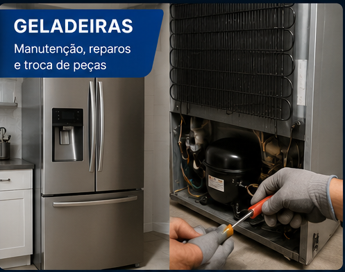
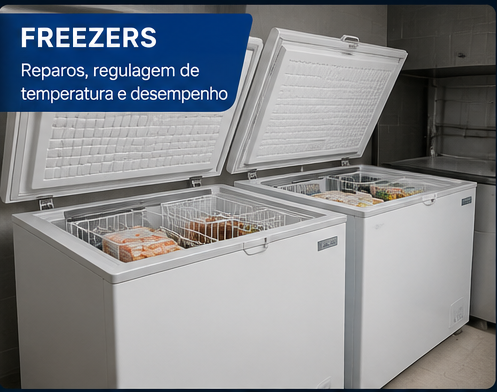
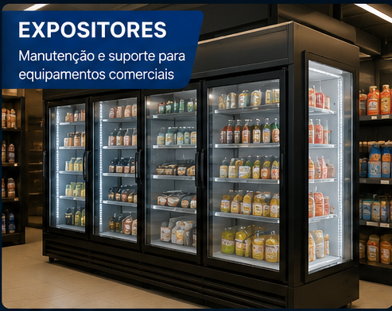
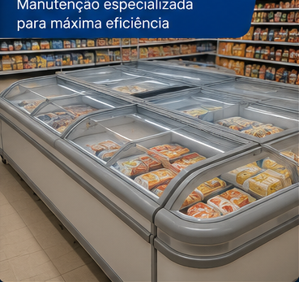
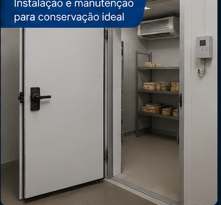
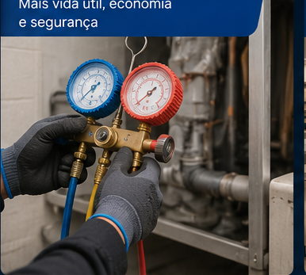
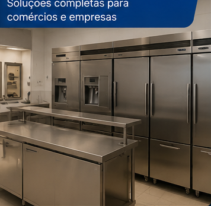

Geladeiras
Manutenção, reparos e troca de peças.
Instalação, manutenção preventiva e corretiva, higienização e atendimento técnico com foco em rapidez, organização e resultado.

Atendimento técnico com foco em eficiência, organização e resposta rápida em Garopaba e região.
Instalação, manutenção preventiva e corretiva, higienização e suporte para equipamentos residenciais e comerciais.

Manutenção, reparos e troca de peças.

Reparos, regulagem de temperatura e desempenho.

Manutenção e suporte para equipamentos comerciais.

Manutenção especializada para máxima eficiência.

Instalação e manutenção para conservação ideal.

Mais vida útil, economia e segurança.

Soluções completas para comércios e empresas.
Seu equipamento pode estar pedindo ajuda quando apresenta:
Não espere o problema aumentar. Faça uma avaliação preventiva.
“Excelente atendimento, rápido e muito organizado.”
“Serviço muito limpo e profissional. Recomendo.”
“Resolveram nosso problema com agilidade e clareza.”
Sim. Instalamos equipamentos novos adquiridos pelo cliente, seguindo todas as recomendações técnicas.
Sim. Atendemos residências, empresas, comércios e condomínios.
Entre em contato com nossa equipe para verificar as condições de atendimento da sua região.
Atendemos Garopaba e cidades da região, oferecendo soluções rápidas para instalações, manutenções e serviços de refrigeração.